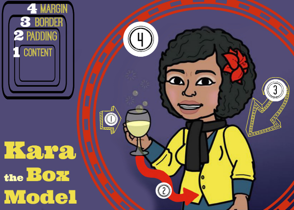
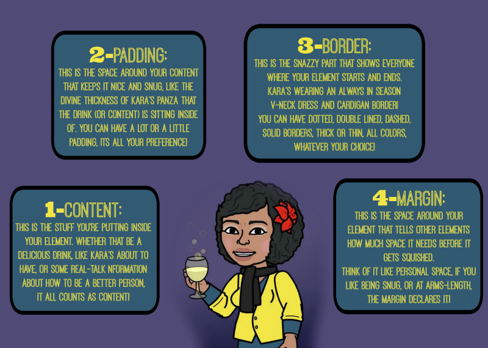
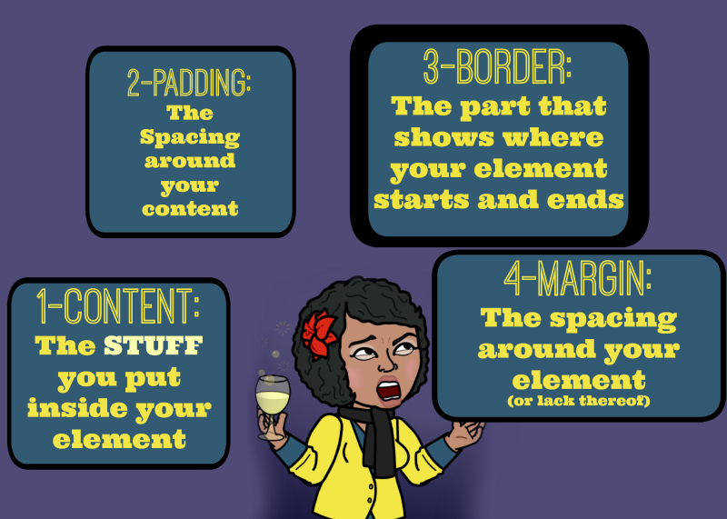
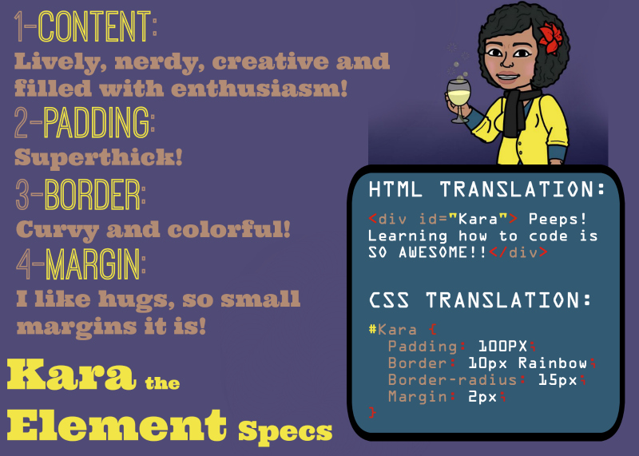
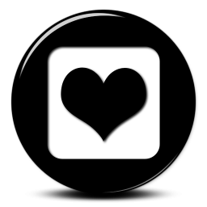
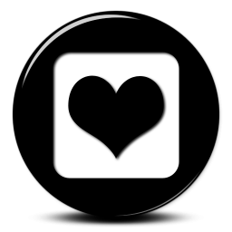

Friends: I'm finishing up Dev Bootcamp, Phase Zero, Week Two, and I have to say, It got me. It got me good.
But during the time I took completing the challenges for Week Two, I learned SO much about HTML and CSS, that I got this pretty lil' website to show for it!
Today, I want to show you all a few things I learned about HTML and CSS; Things that help many of the websites you love look as beautiful as they do, and keep others from getting there. This post is going to be about a foundational concept you need when you think about websites. It's called the Box Model. And though beauty is in the eye of the beholder, this model helps you understand the parameters you can declare to digitally express yourself in any way you'd like, and if you know me and my nerdy, feminist, body-positive ideals, you know I'm loving that!
The Box Model is a concept that web developers and designers use to determine how they want the elements that they create to look and interact with eachother. It basically states that all elements are boxes. What I've done here is decide to explain the Box Model using my lovely self, in Bitstrip form, as a model.
Meet the Kara Element. She's got a tasty drink in her hand (it could be wine, or it could be agua de tamarindo, you decide!), she's feelin' awesome, lookin' good, and her aura is drawing you in with an inviting red glow... looks like she's ready to explain the Box Model!
Starting from the content, the element is wrapped in boxes called Padding, Border and Margin. Here's an explanation of what each of these boxes do:
Content:
This is the stuff you're putting inside your element. whether that be a delicious drink, like Kara's having, or some real-talk nformation about how to be a better person, it all counts as content!Padding:
This is the space around your content that keeps it nice and snug, like the divine thickness of kara's panza that the drink (or content) is sitting inside of. you can have a lot or a little padding, its all your preference! Note: the padding is typically transparent. But as you can see with the Kara Element, her padding is a sporting a lovely shade of brown.Border:
This is the snazzy part that shows everyone where your element starts and ends. Kara's wearing an always in seasonV-neck dress and cardigan border! You can have dotted, double lined, dashed, solid borders, thick or thin, all colors, whatever your choice!Margin:
This is the space around your element that tells other elements how much space it needs before it gets squished.Think of it like personal space, if you like being snug, or at arms-length, the margin declares it! In the previous picture, Kara's personal space margin was displayed in red.
To summarize this:
Once you decide what kind of content you'd like your element to have, and you write all that out in HTML, you can decide how you want the boxes to wrap around so it creates an element that looks as awesome as your content is, in CSS!
So, If I were to write specs for a Kara Element, what would it have?
Content:
The Kara Element has all kinds of amazing and nerdy content, and stylistically, will always express that content in the most enthusiastic way. (try counting how many exclamation marks I've used so far...!) In the HTML Translation, I created what's called a DIV tag, and gave it an ID of "kara" to name my element. It's between these DIV tags that I put my content. (and peeps, learning to code, it really is awesome.)Padding:
The Kara element is all about the thickness! So you see in the CSS Translation, the PADDING has been set to 100px (short for pixels), which is pretty darn thick! changing the px up or down will determine how far away the content is from the border of the element.Border:
Speaking of border, the Kara Element has style for days! She wants a trim that truly shows how creative and colorful she is, so in the CSS translation you see two declarations: BORDER and BORDER-RADIUS. Border has already been explained, but as I described in my specs, I like Curvy borders, so BORDER-RADIUS lets you round-out the edges of the elements border.You can also note in the BORDER declaration, I used 10px width and RAINBOW as my border type. Back in the day, CSS only recognized solid, dashed, dotted, double lined, and you could make these old-school 3D-looking beveled borders. But now with CSS3, my rainbow border dreams can come true by using a BORDER-IMAGE declaration! I can even drop a shadow in there and make it look like magic!Margin:
With all this creative and positive energy, what other element WOULD'NT want to be next to the Kara Element!? So to let people get snug, but still have room for autonomy, I set the MARGIN declaration in CSS Translation to 2px. Snug indeed!
So there you have it, everyone! the Box Model explained by Kara, the 'Box Model' Model. I hope this helped you all gain a little more understanding of websites, CSS, HTML, and about your dear friend over here, Git'in her education on at Dev Bootcamp.
I'm curious, What would YOUR element Specs look like? What kind of CONTENT do you hold inside your PADDING? What style are your BORDERs, and what's a comfortable MARGIN setting for you? use #MyElementStyleis hashtag to share it with me!!
 Tweet
Like
Tweet
Like
 Plus
Plus